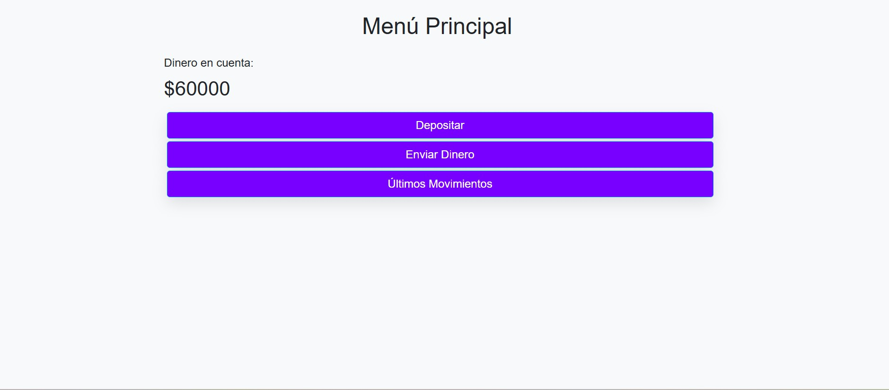

Alke Wallet
Desarrollo Web · Proyecto inicial
Billetera digital desarrollada como uno de mis primeros proyectos web, enfocada en la gestión de saldo y operaciones financieras mediante una interfaz simple e intuitiva.
Tecnologías: HTML5, CSS3, JavaScript, Bootstrap y jQuery.
Ver código en GitHub